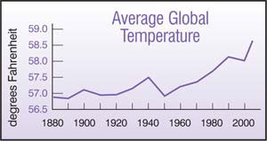
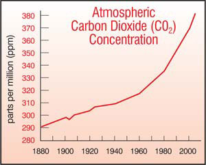

The debate about global warming is over. In a survey published in Science of nearly 1,000 papers on climate change that appeared in scientific journals between 1993 and 2003, none of the papers’ authors disagreed with the position that the Earth’s climate is being affected by human activities.
From National Geographic, Time and thousands of national and local newspapers to prime time television, this scientific consensus finally is being echoed in the media. And many religious groups and local governments are establishing initiatives aimed at stemming the tide of human-induced climate disruption.
This acceptance of global warming has permeated American public opinion, too. Numerous recent polls confirm it: An overwhelming majority of Americans now think that the Earth’s climate really is warming, that humans are responsible for the situation and that it’s time to do something about it.
So just how did we get here? By burning coal, oil and natural gas at rates much faster than these fossil fuels were created, we disrupt the natural carbon cycle, the delicately balanced system by which carbon is exchanged among air, oceans and land. Over the last century, human activities have released enough carbon dioxide and other gases into the atmosphere to raise the temperature of the Earth by about 1 degree. (Americans shoulder the responsibility for a quarter of that pollution.)
So what should we do now? Many experts think global warming is the biggest challenge current and future generations will face. The minimum warming forecast for this century is more than double what already has occurred. The most recent report by the Intergovernmental Panel on Climate Change predicts that the Earth’s temperature will rise 3 to 10 degrees by the end of the century, causing a dramatic rise in sea levels and increasingly severe “natural” disasters such as hurricanes, floods and droughts.
Warmer temperatures are melting the protective polar ice that moderates climate by reflecting about 90 percent of the solar energy striking it. Ocean water, on the other hand, would absorb about 90 percent of that heat. Melting ice and expanding warm water will likely cause unprecedented shifts in the wind and ocean currents that create seasonal weather patterns, and will endanger already precious freshwater supplies worldwide.
A temperature hike of just 3 degrees could melt enough of Greenland’s massive ice sheet to raise sea levels by 3 feet. A recent study found that Greenland is losing ice twice as fast as it was just a decade ago, and it already accounts for about 20 percent of the recent rise in sea level. The most conservative estimates of expanding oceans predict the displacement of millions of people who live on islands or along seacoasts.
Some experts think we could lose a quarter of all species on Earth in less than 50 years, and we’ve already killed 20 percent of the coral reefs in our oceans. Warmer temperatures also threaten agricultural productivity and will foster the spread of tropical diseases, such as malaria, which currently kills a million people annually.
After more than 150 years of industrialization, global warming has momentum; some climate change is now inevitable. But there may be time to avert some of the worst disasters, if we come to understand how interconnected we are with the natural systems that sustain us.
Individuals can help reduce greenhouse gas emissions by conserving energy and driving less or driving more fuel-efficient vehicles. But it is now essential that the citizens and government of the United States rapidly assume a leadership role in developing comprehensive strategies to prevent the most severe dangers.
According to Jim Hansen, one of the first scientists to sound the global warming alarm, “We have to stabilize emissions of carbon dioxide within a decade. We cannot wait for new technologies. We have to act with what we have. This decade, that means focusing on energy efficiency and renewable sources of energy that do not burn carbon. We don’t have much time left.”
|
ISTOCKPHOTO.COM Rising sea levels due to global warming threaten to displace millions of people who live along seacoasts, such as this shoreline in Honolulu. |
 MATTHEW T. STALLBAUMER |
 MATTHEW T. STALLBAUMER |